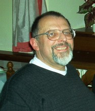

Please note: the AAS Obituaries are temporarily being hosted on this website while their full content is being ingested into the PubPub publishing platform newly adopted by the Bulletin of the American Astronomical Society. When the migration is complete, your existing links will take you to the final, migrated content. Contact peter.williams@aas.org with any questions.
Hilmar W. Duerbeck (1948-2012)
Hilmar W. Duerbeck died on Thursday the 5th of January 2012
Born on July 19, 1948, in Klarenthal (near Saarbruecken in Germany), Hilmar Duerbeck studied physics from 1966 to 1969 at the Universität des Saarlandes (University of the Saarland, Saarbruecken). He then went to Bonn University to study astronomy and physics, where he graduated in 1972 with a thesis entitled Astronomical observations with a photoelectic area photometer. In 1974 he obtained his Ph.D. with a dissertation “The eclipsing binary VV Orionis.” From 1975 to 1985, he was scientific assistant at Hoher List Observatory in Germany, and during the same period he was astronomy lecturer for the European Division of the University of Maryland in Germany. During that period he obtained his habilitation in astronomy at Bonn University with a dissertation “Eruptive variables—observations, analyses, models”. From 1985 to 1991 he was lecturer (astronomy) at the University of Münster, Germany, and from 1996 on he was honorary professor at the same university.
Starting in 1994, he occupied various educational and research positions abroad: exchange professor at the Universidad Catolica de Chile in Santiago and at the Universidad Catolica del Norte in Antofagasta (Chile). He has repeatedly been senior visiting scientist at the European Southern Observatory in Chile, and at the Space Telescope Science Institute in Baltimore, Maryland, USA. For more than a decade, he was senior scientific collaborator at the Vrije Universiteit Brussel, Belgium, and in ~2010 he was appointed as Adjunct Professor at the James Cook University in Australia.
Hilmar was a member of several international organisations and commissions, among which the International Astronomical Union (Commission 42, Close Binary Stars), and the American Astronomical Society. He served in numerous panels and commissions (viz., the Hubble Space Telescope and the International Ultraviolet Explorer), and he served on scientific organizing committees of IAU Colloquia and other meetings. From 2003 on he also was secretary of the “Arbeitskreis Astronomiegeschichte of the Astronomische Gesellschaft” in Germany, and he also chaired the IAU Working Group on Venus Transits.
He was an expert on novae, novae remnants and supernovae, and on cataclysmic variables and flare stars. His best known papers are catalogs and atlases of eruptive stars. He was also a keen observer: for example, in 1975 he visually noticed Nova Cygni (V 1500 Cyg at declination +48°) from ESO La Silla observatory located at –30° latitude, and promptly secured sequences of crucial spectrograms.
Hilmar was a very prolific writer (ADS lists more than 450 entries), and a very active Editor: he has been member of the editorial board of the Information Bulletin on Variable Stars (Budapest, Hungary) and of the Editorial Board of the book series “Acta Historica Astronomiae” (Frankfurt/M., Germany). As Associate Editor of the Journal of Astronomical History and Heritage (James Cook University, Australia), and as co-Editor of the Journal of Astronomical Data (University of Brussels, Belgium), he has helped and coached many authors.
From 1975 until her death in 2007, he was married to Waltraut C. Seitter. He died suddenly and unexpectedly on Thursday, the 5th of January, 2012 at his home in Schalkenmehren, Germany.
Besides his professional dedication, and his legendary encyclopedic knowledge, Hilmar will be best remembered as a quiet and caring personality and as a very helpful and friendly person, who was always kind and generous to his colleagues. In addition, he was most encouraging to students—his own students as well as others'—and at any time ready with good advice, always topped with a big smile.
The main-belt asteroid 1989 SW2 has been named 9327 Duerbeck.
Obituary written by: Christiaan Sterken (Vrije Universiteit Brussel)
Additional links:
- http://www.vub.ac.be/STER/JAD/JAD18/jad18_1/jad18_1.pdf
- http://www.astro.uni-bonn.de/~pbrosche/persons/pers_duerbeck.html
BAAS Citation: BAAS, 2012, 44, 006
SAO/NASA ADS Bibcode: 2012BAAS...44..006S